cmn est un modeste petit programme qui permet de fabriquer et d'afficher des partitions en notation musicale traditionnelle. On peut l'obtenir gratuitement : il suffit de copier en accès anonyme le fichier cmn.tar.gz du site ftp://ccrma-ftp.stanford.edu/pub/Lisp. Il y a toujours encore quelques trous, mais j'espère pouvoir les combler avec le temps. Ce qui manque le plus est une interface graphique intercative.
Chaque fois que l'interviens, le texte apparaît en bleu.
Avant de me mettre à la CMN, je n'avais jamais programmé ni du Lisp, ni aucun langage apparenté. Je trouvais ces langages trop difficiles à lire. Mais l'accoutumance c'est faite très vite. Le langage clisp et le paquetage cmn ont été installés le 7 juin 2002 et j'ai rapidement été séduit par la virtuosité qu'on pouvait atteindre. On va de découverte en découverte et très vite on imagine les pires difficultés de la musique contemporaine et on finit par trouver une solution.
En fait j'avais même des antécédents aggravants : j'avais tenté une installation en automne 2001 : l'installation a réussi (c'est très facile) mais l'ordinateur souffrait de pannes matérielles aléatoires dues à des surchauffes, de sorte que je n'ai jamais pu goûter aux joies de CMN et c'est avec l'ordinateur actuel que je n'ai plus ce genre de problème.
CMN est un programme lisp qui fonctionne normalement avec le paquetage cmn. Voici comment procéder : D'abord lancer clisp :
clisp.Là on se trouve dans clisp avec un prompt qui attend des commandes. On charge le paquetage spécifique de cmn :
(load "cmn-all.lisp").Puis on déclare vouloir entrer dans cmn :
(in-package :cmn).Enfin, on peut charger l'un ou l'autre fichier d'exemples fourni avec cmn. Par exemple:
(load "joh.cmn")
Pour les premiers essais, on peut aller dans le répertoire où on a mis les exemples. Mais ce n'est pas nécessaire : on peut avoir le paquetage cmn dans un répertoire "CMN", les textes sources dans un répertoire "partitions" être dans un autre répertoire où CMN va écrire la sortie en PostScript. Comme clisp est normalement installé dans les exécutables, il sera accessible de partout. Les entrées pour une telle situation sont donc à modifier ainsi :
clisp
(load "/le_chemin_complet/CMN/cmn-all.lisp")
(in-package :cmn)
(load "/le_chemin_complet/partitions/sonate.cmn").
L'auteur du logiciel propose une alternative à clisp : Allegro Common Lisp. J'ai tenté de l'installer (pour voir), mais cela n'a pas été concluant et je préfère rester avec clisp. Mais il faut que je prévienne : une première installation n'a pas bien fonctionné ; il y eut des erreurs dont je ne sus détecter l'origine (clisp ou cmn ?). J'ai réinstallé le tout et cela fonctionne à merveille (il est vrai que je ne suis pas du tout "installateur" mais "utilisateur").
Quand le fichier "sonate.cmn" a été chargé, ou bien cmn manifeste sa satisfaction en affichant un T (ce qui veut dire "true") ; dans ce cas, cmn a déjà produit un fichier de sortie en PostScript qui, si rien d'autre n'a été spécifié, s'appelle aaa.eps. Sinon, cmn fait quelques commentaires ce qui permet plus ou moins facilement de trouver l'erreur qui a été faite. A l'attention de ceux qui n'ont jamais travaillé avec un logiciel d'interprétation ou de compilation : le logiciel ne peut signaler que les erreurs contrevenant à la syntaxe et à la morphologie du langage. Il ne peut pas détecter ce qu'on a pensé de travers ; cela demande un effort de compréhension (un logiciel est comme un animal ou un petit bébé : il faut essayer de le comprendre).
Après avoir chargé cmn, écrivez (in-package :cmn) ou (en ACL) :pa :cmn,et toutes les entités seront disponibles. On peut aussi donner le nom du paquetage en préfixe si on travaille dans un autre paquetage, mais à la longue, cela agace.
Voici comment cmn marche en général : l'expression lisp:
(cmn staff treble c4 q)
produit le fichier "aaa.eps" (la valeur par défaut de *cmn-output-pathname*):
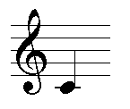cmn est la fonction principale. Elle lit tous les arguments, répartit les données musicales en systèmes et portées, insère les sauts de ligne et sauts de page, les poutrages, les liaisons, la dynamique etc. Enfin, elle aligne et justifie le résulat et écrit un fichier "encapsulated PostScript" (nommé aaa.eps dans ce cas). Les termes utilisés sont ceux de «Score» ou «Common Music» c4 est le Ut du milieu du piano, q correspond à la noire, etc. En général, la syntaxe de cmn est :
cmn attributs-généraux systèmes
Les attributs généraux concernent les dimensions graphiques, les dimensions de la page, l'épaisseur des poutres etc. Comme la dimension de base est de 40 par défaut, on peut la fixer par exemple à 24 en disant :
(cmn (size 24) staff treble c4 w double-bar)

Les sytèmes contiennent toutes les données musicales. Chaque système est un groupe de portées reliées ensemble par des crochets et séparés verticalement des autres systèmes. Chaque système contient les notes et leurs attributs. Si aucun système n'est indiqué explicitement, il en est créé un automatiquement et de même pour les portées. Voici un exemple d'une partition à deux systèmes dont l'un a deux portées :
(cmn (size 24)
(system brace
(staff treble (meter 6 8)
(c4 e. tenuto) (d4 s) (ef4 e sf)
(c4 e) (d4 s) (en4 s) (fs4 e (fingering 3)))
(staff treble (meter 3 4)
(c5 e. marcato) (d5 s bartok-pizzicato) (ef5 e)
(c5 e staccato tenuto) (d5 s down-bow) (en5 s) (fs5 e)))
(system bracket
(staff bar bass (meter 6 16)
(c4 e. wedge) (d4 s staccato) (ef4 e left-hand-pizzicato)
(c4 e tenuto accent rfz) (d4 s mordent) (en4 s pp) (fs4 e fermata))))

Tout ce qui est porté sur une partition est un « objet » de la partition : c4 staff tenuto ... Chaque « objet » est à la fois une constante et une fonction - ce que veut dire que staff a des valeurs par défaut (5 lignes, une dimension standard, une direction etc.) mais que ces valeurs peuvent être changés en envoyant des « arguments » supplémentaires à l'objet staff. En tant que fonction, un objet accepte un grand nombre d'arguments.
Le langage Lisp doit en principe respecter une syntaxe conventionnelle nommée CLOS dont les règles disent qu'il faut passer par la fonction setf pour appliquer d'autres arguments. Mais cela implique beacoup de texte à taper en outre il faut documenter chaque accès à l'objet - cela finirait par noyer l'objet dans un déluge de parenthèses. En cmn la manière standard pour changer un attributd'un objet est de demander la modification de l'attribut en passant un argument :
Ainsi
(c4 q staccato)
crée un objet c4, auquel est attribué une durée d'une noire et un point de staccato. En général, c'est la même chose que :
c4 q staccato
qu'on voit dans les exemples. La fonction staff enregistre les séquences de notes et leur cortège d'attributs en rétablissant les parenthèses sous-entendues. Il est bon de mettre les parenthèses quand il y a un risque d'ambiguïté. Ainsi on pourrait écrire ainsi le précédent exemples :
(cmn (size 24)
system brace
staff treble (meter 6 8) c4 e. tenuto d4 s ef4 e sf
c4 e d4 s en4 s fs4 e (fingering 3)
staff treble (meter 3 4) c5 e. marcato d5 s bartok-pizzicato ef5 e
c5 e staccato tenuto d5 s down-bow en5 s fs5 e
system bracket
staff bar bass (meter 6 16) c4 e. wedge d4 s staccato
ef4 e left-hand-pizzicato c4 e tenuto accent rfz
d4 s mordent en4 s pp fs4 e fermata)
Je trouve que la première forme est plus facile à lire, mais il est vrai
que j'ai l'habitude de lire du Lisp parenthésé.
Je n'ai pas complètement nettoyé les résidus, il reste donc quelques
endroits où les parenthèses sont nécessaires.
cmn, system et leur suite sont des fonctions et non pas des
macros, ce qui fait que les flots de données sont interprétés sans
autre comme arguments d'une fonction.
La résolution d'écran est inférieure à celle des imprimantes ; il arrive
donc que les images affichées soient crénelées par suite d'erreurs
d'arrondi (voir le crochet de l'exemple donné).
Dans les exemples suivants, j'omets les arguments, tels que
(size 24) qui ne sont pas indispensables pour
comprendre.
L'argument cmn overall-score-attributes permet de
déterminer quelques valeurs qui affecteront la mise en pages de toute
la partition ; à l'exception des dimensions concernant l'empreinte
imprimable elle-même (largeur de la page : page-width, etc.),
toutes les mesures sont exprimées par rapport à la dimension verticale
de la portée -- ainsi une portée normale mesure 1.0, et tout autre
chose s'y rapporte. Si on veut utiliser des centimètres au lieu de
« inches » et des normes européennes au lieu des américaines, il
faut fixer
la variable *cmn-units* à :cm.
La valeur par défaut est
:inches. Voici la liste des attributs possibles :
| output-file | "aaa.eps" | (pour numéroter les fichiers, ajouter "-1" au nom) |
| output-type | *cmn-output-type* | :postscript, :x, :quickdraw |
| size | 40 | coefficient d'échelle global |
| automatic-line-breaks | t | cmn coupe les lignes automatiquement |
| automatic-octave-signs | t | cmn ajoute automatiquement les signes d'octaves |
| automatic-beams | t | si cmn doit calculer le poutrage (see beaming meter message) |
| automatic-ties | t | si cmn doit insérer les liaisons |
| automatic-bars | t | si cmn doit insérer les barres de mesure |
| automatic-rests | t | si cmn doit insérer les silences |
| automatic-naturals | nil | si cmn doit insérer les bécarres |
| automatic-beat-subdivision-numbers | t | si cmn doit afficher les valeurs des subdivisions irrégulières |
| automatic-measure-numbers | nil | peut être t = 1, un nombre, :by-line, ou :by-page |
| curvy-flags | t | drapeaux incurvés ou droits |
| use-italian-octave-signs | nil | faut-il ajouter "va" à "8" et "ma" à "15" |
| add-bassa-to-octave-signs | nil | faut-il ajouter "bassa" |
| use-abbreviated-staff-names | t | s'il faut abréger les noms de portée |
| always-show-gliss-name | t | faut-il imprimer "gliss" sur des glissandos qui ne seraient pas marqués |
| always-show-staff-names | t | faut-il continuer à nommer les portées après la première |
| always-show-clefs | t | faut-il mettre la clé à chaque nouvelle ligne |
| automatic-clef-size | 1.0 | dimension des clés placés sous le drapeau always-show-clefs |
| all-output-in-one-file | nil | envoyer les changements de page dans un fichier au lieu de fichier séparés |
| implicit-accidental-style | :new-style | plusieurs manières pour traiter les altérations |
| implicit-accidental-duration | 1 | |
| redundant-accidentals | t | nil enlève les altérations redondantes |
| accidental-to-note-head-space | 0.0625 | espace entre altération et tête de note |
| layout | nil | mises en page compliquées -- voir plus loin |
| page-color | nil | couleur (rgb) du fond de page |
| page-height | 11.0 (29.7) | inches (cm) -- cm si *cmn-units* = :cm |
| page-width | 8.5 (21.0) | inches (cm) |
| left-margin | 0.5 (1.0) | inches (cm) |
| right-margin | 0.5 (1.0) | inches (cm) |
| header-margin | 1.0 (2.0) | inches (cm) |
| footer-margin | 1.0 (2.0) | inches (cm) |
| title | nil | |
| metronome | 60 | pour add-note et analogues |
| line-separation | 2.0 | espace entre les lignes |
| staff-separation | 1.5 | espace entre portées |
| system-separation | 1.5 | espace entre systèmes |
| note-head-size | 1.0 | coefficient général d'échelle des notes (les valeurs par défaut sont un peu trop petites) |
| grace-note-size | .5 | |
| glissando-thickness | .01 | épaisseur des glissando-lines (droites) |
| tie-thickness | .04 | épaisseur des liés |
| tie-curvature | .125 | courbure des liés |
| slur-thickness | .03 | épaisseur des legatos (c'est un petit défaut) |
| slur-curvature | .25 | courbure des legatos (this is pretty flat) |
| maximum-slur-slope | .75 | pente des arcs de liaison |
| beam-spacing | (* 2.125 .126) | distance entre poutres |
| beam-width | (* 1.125 .126) | épaisseur des poutres |
| beam-slope-trigger | .5 | min ambitus for sloped beam (.5=half octave) |
| maximum-beam-tilt | .4 | how tilted beams are allowed to be |
| partial-beam-length | .4 | max length of a partial beam |
| partial-stem-length | 0 | set this >0 if you want partial stems |
| stem-width | .025 | width (fatness) of stem |
| barline-thickness | .02 | thickness of bar lines |
| ideal-stem-length | .5 | first stab at basic stem length |
| staff-line-width | .02 | thickness of staff lines (most use thicker lines than this) |
| staff-name-font | "Times-Roman" | instrument names prepended to staves |
| staff-name-font-scaler | .4 | |
| staff-name-font-minimum-size | 8 | |
| text-connecting-pattern | '(10 0) | default is an undashed line |
| text-connecting-thickness | .02 | |
| first-measure-number | nil | début du numérotage des mesures |
| initial-onset | 0 | premier temps de la partition (pour éviter des tas de silences initiaux) |
| full-last-line | nil | si la dernière ligne prend toute la largeur |
| page-hook | nil | utilisé pour des trucs spéciaux (voir cmn-ex.lisp) |
| line-hook | nil | used for line related actions |
| free-expansion-factor | 1.25 | blanc ajouté par la justification |
| music-font | nil | nom de la fonte, si ce n'est pas celle de cmn (e.g. "Sonata") |
| une ligne par page | nil | si t, chaque ligne est placée sur une page separée |
| title-separation | nil | espace entre titre et portée |
| default-font | "Times-Roman" | "Times-Roman" "Times-Italic" "Times-Bold" "Times-BoldItalic" |
| dynamics-size | .8 | default dynamics mark size |
| brace-space | .125 | space between brace and staff lines |
| first-dot-spacing | .2 | space between note and first time augmentation dots |
| dot-spacing | .1 | space between subsequent time augmentation dots |
| flag-vertical-spacing | .2 | vertical space between stem flags |
| maximum-subdivision-bracket-tilt | 0 | maximum bracket tilt |
Sauf indication contraire, c'est la hauteur d'une portée qui est l'unité de mesure. Une portée normale de 5 lignes mesure 1.0. La fonction in-inches (in-cm) traduit de inches (cm) en unités « cmn ». Ainsi si on veut des poutres plus épaisses :
(cmn (beam-width .275) (beam-spacing .4) staff treble c4 s d4 s)

Avec les curvy-flags on peut choisir des flammes courbées ou droites :
(cmn (curvy-flags nil) staff treble a4 s)
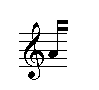Les contenus actuels de la partition sont les prochains arguments pour cmn. Toutes les entités qui décrivent un objet musical ou quelque attribut de cet objet utilisent la même syntaxe et acceptent les mêmes « messages ».
Chaque objet ou groupement d'objets peut être tourné, agrandi ou rapetissé horizontalement ou verticalement et aussi être déplacé en n'importe quel endroit de la partition.
Tout fichier de commandes graphiques (fichiers .eps) peut-être traité comme un objet et comme tout autre objet. cmn peut être appelé récursivement, enchâssant des partitions entières dans d'autres partitions. Enfin, il est facile d'inclure vos propres comanndes dans cmn (voir graphics). Dans ce qui suit, je vais utiliser le terme « message » pour désigner une fonction qui affecte l'objet auquel elle a été passée en argument. Par exemple, dans l'expression :
(meter 6 8 (meter-size 2))
"(meter-size 2)" est un message adressé à l'objet créé par la function "meter", "6" et "8" sont les arguments normaux et "meter" est une fonction qui crée un objet de la partition. Dans ce cas, l'effet du message est de doubler la taille des chiffres :
(cmn treble (meter 6 8 (meter-size 2))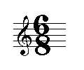
La musique est décrite par une liste de systèmes, chaque système
contient une liste de portées, chaque portée contenant une liste
d'objets tels que notes, silences, etc. et chaque objet contient
une collection de listes décrivant les attributs. Systèmes et
portées sont créés automatiquement si ce n'est pas spécifié
dans les arguments. Cela veut dire que (cmn
system staff treble) est la même chose que (cmn treble),
mais dans des cas plus compliqués, il vaut mieux (et quelquefois
c'est indispensable) d'être explicite.
En plus des entités intégrées, toute fonction rencontrée dans la
liste des arguments de cmn est évaluée (évidemment) et
le résultat (soit un un objet ou une liste d'objets) est assemblée
aux données comme s'il s'agissait d'une écriture explicite.
On dispose ainsi d'un moyen puissant pour faire appel à toutes
les ressources de Lisp. Quelques fonctions sont fournies par
cmn et d'autres exemples vont suivre.
Dans tout ce qui suit à propos de ce que cmn contient, il ne faut pas oublier qu'un objet répond non seulement à des messages uniques tels que rotate ou x0 (qui seront passés en revue), mais aussi à une liste d'attributs. Un attribut est un code quelconque que vous souhaitez associé à un autre objet (éventuellement lui-même un attribut) et évalué chaque fois que son propriétaire est évalué (affiché). Un point de staccato par exemple est une marque attachée à une note. Le code associé détermine où est l'axe central de la note, s'il doit être au-dessus ou en-dessous et à quelle distance (pour éviter par exemple une collision avec une ligne de portée). Ce code est appelé quand il faut afficher un objet ou calculer sa grandeur. Les messages standard sont :
dx dy x0 y0 x1 y1 center justification
En général dx et dy déterminent le placement d'un objet par rapport à l'objet auquel il appartient. Une note, par exemple, appartient à une portée et accompagne cette portée quand lignes et pages sont justifiées. Une marque de staccato peut être liée à une note et l'accompagne jusqu'à trouver sa position verticale sur la portée. Très souvent le point (x0,y0) désigne le coin gauche inférieur et (x1,y1) le coin droit supérieur de la "bounding box" (boîte limite) d'un objet. L'axe central n'est connu que des objets qui servent à aligner les objets le long de la portée. Par exemple, si nous voulons déplacer un marcato vers la droite :
(cmn (staff treble (c4 w (marcato (dx .5)))))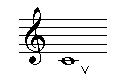
La matrice d'un objet contrôle son orientation et son placement par rapport au propriétaire de cet objet. Ndt : Pas de panique. Il n'est pas nécessaire d'être un spécialiste du calcul matriciel pour se servir d'une matrice dans cmn. Lisez attentivement les commentaires et faites quelques expériences et cmn montre toute sa puissance. On dispose d'un certain nombre de fonctions pour transformer aisément les coordonnées :
rotate angle ; effectue une rotation en degrés dans le sens des aiguilles d'une montre.
scale x y ; étend ou comprime l'objet en multipliant par x et y
; (scale 0 0) ou invisible rend l'objet courant invisible
mirror (fonction) et mirrored (variable) ; le même effet que (scale -1 1)
transform matrix ; multiplie la matrice de l'objet courant par la matrice donnée
La matrice la plus externe sert pour déplacer la partition sur la feuille :
(cmn (matrix (list 1 0 0 1 200 0)) staff treble)
Les 4 premiers nombres ("1 0 0 1") produisent une partition de dimensions et orientation inchangée, le 5e est le décalage horizontal et le 6e le décalage vertical (en pixels).
L'encrage d'un objet détermine comment il va apparaître (son « encre ») :
gray-scale &optional (val 0) ; 0 = noir (par défaut), 1 = blanc, val est entre 0 et 1
détouré &optional (val 0) ; 0 = extra fin, val est un nombre décimal
couleur r-g-b ; 1.0 = couleur, 0.0 absent (e.g (color '(1.0 0.0 0.0)) => rouge)
(cmn staff (treble mirrored (dx .5))
(treble (rotate 180) (dy .75) (color '(0.25 0.5 0.0)) (scale -2 .5))
(bass (gray-scale .5) (dx .75))
(bass (outlined .02) (dx .75))
(quarter-rest (color '(1.0 0.0 0.0)) (rotate 45) (dx .85) (scale 1 2))
(eighth-rest (rotate 90) (dy -.4) (dx .25) (color '(0.0 0.5 0.5)) (scale 2 1)))

Les noms des couleurs de X11 correspondent au rgb.lisp. (cmn (treble aquamarine) c4 q) par exemple. Pour des exemples plus complexes lire le fichier cmn-ex.lisp.
system &rest objects
Chaque partition est organisée en groupes de portées, chaque groupe est appelé un système. La fonction system ressemble à la fonction cmn : elle placer ses arguments sous forme de d'attributs et de portées pleines d'objets musicaux. Les objets principaux d'un système sont des portées et des accolades de système. Il y a deux sortes d'accolades : les courbes et les droites. Si une portée a les deux (cordes divisées par exemple), il faut affecter l'accolade droite au système et la courbe à la portée inférieure :
(cmn (system (staff)) (system bracket (staff) (staff brace) (staff)))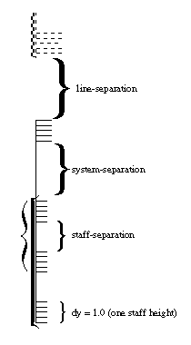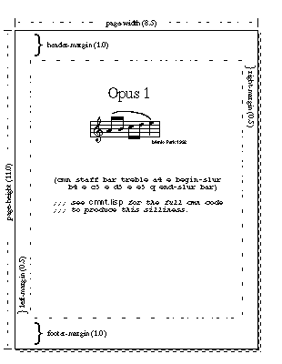
S'il y a un attribut avant qu'une portée ait été créée, il est affecté au système. Autrement il est affecté à la portée courante.
On m'a signalé que la plupart entendent par « système » le groupe que je désigne par « ligne » et qu'on utilise le mot « section » là où j'écris « système ». Pour moi « section » est une partie d'une pièce (voir la fonction section plus loin) et non pas « partie d'un ensemble ». J'espère que cette terminologie non usuelle ne sera pas cause de trop de confusion.
staff-name staff-size staff-lines tied-to start-line line-separation
Chaque portée traite ses arguments comme le font cmn et system -- elle essaie d'en faire des armatures, des mètres, des clés, des barres de mesure, des notes, des accords etc. Une portée a un nom facultatif (normalement l'instrument qui lui est associé), une dimension (un multiplieur sur l'ordonnée y de chaque objet sur la portée), un nombre de lignes (normalement 5), une liste d'attributs et une liste d'objets.
(cmn (staff (staff-name "E-sharp Bazooka") (staff-lines 2) (e4 w fff))
(staff (staff-name "c-flat Clavicle") (staff-lines 0) treble d4 q c5 h.)
(staff (staff-name "Violin") (staff-size .5) sub-bass g2 h c2 h))
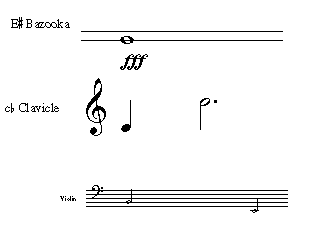Si un nom de portée comporte un "-flat" (bémol) ou un "-sharp" (dièse) après la première lettre, cmn lui substitue le symbole musical. A moins que vous en décidize autrement (via les options always-show-staff-names et use-abbreviated-staff-names) les lignes suivantes d'une portée produisent une version abrégée du nom de l'instrument. Le message tied-to se superpose aux portées. On fixe la position et la largeur d'une portée par dy, x0 et x1. Par exemple, pour faire une portée vide de 3 inches :
(cmn (staff (x1 (in-inches 3))))
une partition imprimée verticalement :
(cmn (transform '(0 1 -1 0 200 200)) (staff (x1 7.5) treble c4 e d4 e))
ou du papier à musique :
(cmn (header-margin 0) (engorge
(loop for i from 0 to 6 collect (staff (x1 (in-inches 7.5))))))
Si le message adressé à la portée est gray-scale, tout est imprimé avec cette couleur. Le message start-line est utile pour les parties de percussion -- il specifie quelle ligne est la ligne initiale (3=mid).
Le message line-separation est utile pour changer la distance entre lignes de la portée indépendamment des valeurs globales size et *staff-line-separation* (par défaut fixé à 0.126).
Dans stf.lisp il y a un exemple changeant les lignes de la portée aux temps impairs.
bar
double-bar
interior-double-bar
dashed-bar
full-double-bar
full-bar
begin-repeat-bar
end-repeat-bar
begin-and-end-repeat-bar
full-interior-double-bar
begin-and-end-repeat-bar-without-thin-lines
begin-and-end-repeat-bar-with-one-thick-line
begin-flanges-repeat-bar
end-flanges-repeat-bar
(cmn (size 24) bar c4 q begin-and-end-repeat-bar c4 q interior-double-bar
c4 q dashed-bar c4 q begin-repeat-bar
c4 q end-repeat-bar c4 q double-bar)
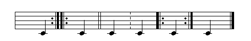Si une barre est placée au début ou à la fin d'une portée, elle justifiée par rapport à la droite ou la gauche de cette portée. Les barres "pleines" traversent tous les systèmes. Pour qu'une barre générale soit placée au début de chaque nouvelle ligne d'un ensemble, mettre au début de la dernière portée de l'ensemble (pas très clair : voir l'original du texte).
double terminal justification within-measure dashed dots-left dots-right broken height breathing-space thickness flanges
within-measure est t
si la barre (normalement une barre de reprise)
n'a pas de signification métrique.
broken détermine si la barre continue à travers les systèmes breaks.
thickness et breathing-space
concernent les double-barres ;
height indique la hauteur de la ligne
(annulant la valeur par défaut de cmn)
flanges (une barre-crochet) peut être
t, :right, ou :left
Voilà une barre épaisse, haute d'une moitié d'une portée placée au milieu de la portée :
(cmn (barline-thickness .2) treble c4 q (bar (dy .25) (height .5)) c4 q)
bracket &rest objects brace &rest objects
Le "brace" est une braquette dans le style des accolades de piano. Il faut le placer sur la portée inférieure. L'accolade peut relier n'importe quel nombre de portées si on utilise le message "brace-staves".
french-violin treble tenor-treble
soprano mezzo-soprano alto tenor baritone baritone-C
baritone-F bass sub-bass double-bass
percussion
(clef treble ...) est la même chose que (treble ...).
(cmn staff french-violin c4 q treble c4 q soprano c4 q mezzo-soprano c4 q
alto c4 q tenor c4 q baritone c4 q bass c4 q sub-bass c4 q)

Si on a omis de donner une clé à une portée, la clé est mise
d'office (pour permettre le placement des notes), mais elle est
mise à l'échelle (0 0) pour rester invisible. Les clés ont le
message addtionnel " unjustified" (non justifié) et "breathing-space"
(espace soufflet).
Tenor-treble est une clé de sol avec un "8".
À moins que la partition ait l'attribut (score-slot)
(always-show-clefs nil), la clé est affichée au début de
chaque nouvelle ligne.
accidental &rest objects sharp flat natural double-sharp double-flat small-sharp small-flat small-natural (cmn staff treble g4 q gs4 q gf4 q gn4 q (g4 q double-sharp) (g4 q double-flat) (g4 q natural-sharp) (g4 q natural-flat))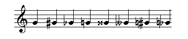
Avec les notes, on peut utiliser ou la notation cs/cn/cf
ou la fonction sign ;
avec les ornements, utiliser ornament-sign.
Le fichier quarter.lisp implémente des symboles pour noter les quarts de ton.
key &rest objects c-major a-minor cs-major as-minor df-major bf-minor d-major b-minor ef-major c-minor e-major cs-minor f-major d-minor fs-major ds-minor gf-major ef-minor g-major e-minor af-major f-minor a-major fs-minor bf-major g-minor b-major gs-minor cf-major af-minor
Pour annuler une armature (c. à d. mettre des bécarres là où il y avait
des altérations), on utilise la commande cancel. Pour des
armatures spéciales, on utilise def-key et on fait suivre
avec les noms des notes altérées
(def-key foo-major bf4 ef5 fs5)
(cmn staff tenor b-major c4 q
bar (cancel b-major) ef-major c4 q bar bass foo-major c4 q))

meter numerator denominator &rest objects
"meter" affiche la métrique et impose la métrique de la portée (pour les besoins du poutrage par ex.). Numérateur et dénominateur peuvent être des entiers, des chaînes ou des symboles. Les mètres dénommés sont
alla-breve common-time cut-time unmetered
(cmn staff treble (meter 6 8) c4 h. bar (meter '5+7 8) c4 w
bar cut-time c4 w bar (meter 2 2 in-parentheses (dx .1)) c4 h
bar (meter 9 8) (meter '4+5 8 (dx .1) in-parentheses) c4 w
bar (meter 3 2 note-head-denominator) c4 h
bar (meter 3 4 suppressed-denominator (meter-size 2)) c4 q.)
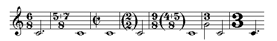On change les dimensions des symboles de la métrique avec le message
meter-size. Si on souhaite que le poutrage respecte une métrique
sans que celle-ci soit indiquée, mettre meter-size à 0. La
métrique accepte les messages complémentaires : suppressed-denominator, note-head-denominator,
et beaming.
Le message beaming se répercute sur le poutrage
automatique -- cf. des exemples dans cmn-ex.lisp.
note &rest objects
Les dénominations standard des notes en Score et en Common Music c0..bs8
sont tout à la fois implémentées comme constantes et comme fonctions :
c4 est le c médian (Ut3); cf4 abaisse c4 d'un demi-ton et bs4 élève b4
d'un demi-ton. En tant que fonction, toutes acceptent tous les messages usuels.
Les durées et les
"onset times" sont traités en tant que noires, indépendamment du tempo.
Ce qui veut dire que
(onset 2.5) fait débuter la note concernée au temps d'une 2.5e de noire --
la durée véritable en secondes ne nous intéresse pas.
De même,(duration .5) signifie une croche, quel que soit le tempo
ou la métrique. Cela ne peut prêter à confusion que dans les mètres composés
(6/8) où on calcule "onsets" et durées en noires et non en 1.5 de noire.
Malheureusement, il y a ces quelques cas spéciaux de la musique occidentale
(trémolos rythmés etc.) qui sont à traiter séparément.
Voici les valeurs rythmiques :
double-whole whole half quarter eighth sixteenth thirty-second sixty-fourth one-twenty-eighth 64th 64th. 32nd 32nd. 16th 16th. 8th 8th. q q. q.. h h. h.. w w. dw e e. e.. s s. s.. ts te tq th te. tq. ts. q... h...
ts signifie double-croche en triolet. Le point indique une durée pointée : ainsi q. est une noire pointée. En général (rq n) produit un objet rythmique ayant la valeur de n noire : q = (rq 1), tq = (rq 2/3), deux cinquièmes de noire (rq 2/5) etc. Il faut utiliser cette forme pour cmn ait une chance pour comprendre que vous souhaitez un triplet de 17e. Normalement les nombres et les crochets des rythmes irréguliers sont ajoutés automatiquement par cmn.
Quand les notes ne vont pas simplement à la queue leu leu, on peut utiliser les messages "onset" pour indiquer explicitement les décalages de temps (ou bien utiliser les "beat message" qui est relative au décalage de mesure et compte les temps à partir de 1).
Si les notes ne vont pas simplement à la queue leu leu, on peut utiliser les données onset pour indiquer explicitement le point temporel (ou bien indiquer la battue qui se réfère au point temporel dans la mesure qui numérote les battues à partir de 1). Je conseille de s'inventer quelques exercices pour bien maîtriser ces possibilités.
Les messages additionels aux notes sont :
line note-head sign cclass pitch octave head-quarters tie-direction stem-dy stem-direction stem-up stem-down no-stem in-parentheses slur-direction note-head-size dots flags head-quarters dashed-stem
La direction de la hampe est donnée soit par :up, :down, :none, ou nil. Si elle est nil, cmn essaie de tracer la hampe à partir du contexte. :none enjoint de ne pas tracer de hampe. stem-up, stem-down, no-stem sont d'autres variables.
(cmn staff treble (c4 h (onset 0) stem-down) (c5 e (onset 0) stem-up) (b4 e (onset .5) stem-up) (a4 q (onset 1.0) stem-up))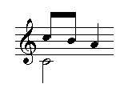
dashed-stem trace une hampe en pointillés. Sa valeur est nil, t ou une pattern-list (chaîne servant de modèle). Autres variables : dashed-stem et whisper.
Comme c'est un peu la galère pour ne pas perdre la trace des
(cmn (setf s1 (staff treble (meter 6 8) a4 e a4 e a4 e a4 q.))
(staff (tied-to s1) (d4 q. stem-down) (d4 q. stem-down)))
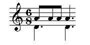note-head décrit la tête de note. nil, valeur par défaut, est identique à :normal et trace une tête normale. Autres types : :diamond, :diamond-1 (côtés inclinés), :triangle, :square, :x, :circled-x, :artificial-harmonic, :tremolo, :slash, :none, :airy-head, :breath-out, :breath-in, :arrow-up, :arrow-down. La tête de note peut aussi être n'importe quel signe graphique -- il sera placé à l'endroit de la tête.
(cmn (size 24) staff treble (c4 e (note-head :square)) (e4 e (note-head :x)) (g4 q (note-head :triangle)))

Les attributs supplémentaires sont simplement ajoutés à la liste des arguments et il appartient à cmn de se débrouiller pour les placer. Les points, les drapeaux (flags) et les commandes de têtes (head-quarters) peuvent se mettre à la place des implémentations habituelles de cmn (head-quarters dit s'il faut utiliser des têtes de noire, de blanche ou de ronde) :
(cmn (automatic-rests t) (automatic-ties nil) (automatic-beat-subdivision-numbers nil) staff treble (meter 7 8) (c4 (rhythm 7/16) (dots 0) (flags 1) (setf sub (beat-subdivision- (subdivision "8:7")))) (c4 (rhythm 21/16) (dots 1) (flags 0)) (c4 (rhythm 7/4) (dots 0) (flags 0) (head-quarters 2) (-beat-subdivision sub)) (c4 q. (dots 0) (flags 5)) (c4 (rhythm 3/16) (dots 0) (flags 3) (setf sub (beat-subdivision- (subdivision "4:3")))) (c4 (rhythm 9/16) (dots 1) (flags 2)) (c4 (rhythm 3/4) (dots 4) (flags 0) (-beat-subdivision sub)))
S'il y a un risque de collision, cmn essaie de placer les têtes de telle façon que toutes soient visibles. Si on veut qu'une seule tête n'apparaisse dans un unison, mettre la variable *overlap-noteheads* à t. Pour confirmer à cmn que les valeurs rythmiques sont exactes (donc pour empêcher qu'elle "rationalise" le code), mettre la variable *exact-rhythms* à t.
chord &rest objects
chord note un accord et comporte un argument obligatoire :
notes &rest ns
(cmn staff treble (chord (notes e4 g4 f4 a4 c5 b4 d5) s stem-down) (chord (notes e5 g5 f5 a4 c5 b4 d5) s) (chord (notes cn4 ef4 gn4 bf4 ds5 fn5) e stem-down))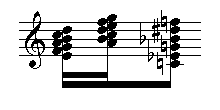
Les messages à l'objet chord (liaisons, dessin des têtes de notes, valeurs rythmiques etc.) affectent chaque note de l'accord. Pour changer les attributs d'une note particuliaire, envoyer le message à cette note.
Des accords sur plusieurs portées utilisent le message tied-to (voir cmn-ex.lisp).
(cmn staff treble
(chord (notes c4 e4 g4) q (note-head :diamond))
(chord (notes (c4 (note-head :diamond))
(e4 (note-head :triangle))
(g4 (note-head :x))) q))


auxiliary-note &rest objects
auxiliary-note crée un signe qui contient une petite note. Ce signe est utilisé normalement pour noter les harmoniques (hauteur réelle). Les arguments pour auxiliary-note sont les mêmes que pour les notes normales.
(cmn staff treble (c4 q (note-head :diamond)
(auxiliary-note c6 no-stem in-parentheses)))
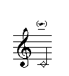grace-note &rest objects grace-notes &rest objects appoggiatura &rest objects stem-direction slashed slurred unjustified stem-dy slash-thickness
La valeur de stem-direction est normalement :up. slashed est t pour les petites notes (grace-notes) et nil pour les appoggiatures. slurred est t pour les deux. Il est dur d'obtenir automatiquement les dans tous les cas. Voir ce qu'on en dit sous slur. S'il n'est pas nécessaire de réserver de la place supplémentaire pour les petites notes, on utilise la commande unjustified. Quand il y a plusieurs petites notes, il est d'usage de tracer deux barres sur deux ou trois notes et trois barres s'il y a plus de trois notes. Cela peut être modifié en spécifiant exactement le rythme souhaité :
(cmn staff treble
(g4 q (grace-note fs4))
(g4 q (grace-note (slurred nil) (stem-direction :down) b4
(note-head :diamond) staccato tenuto wedge fermata))
;; omit the slur and use a diamond head on the grace note
;; and get very confused about articulation
(g4 q (grace-note e4 fs4)) (g4 q (grace-note gf4 ef4))
(g4 q (grace-note (slashed nil) b4 a4)) ;; omit the slash
(b4 q (grace-note d4 e4 fs4 g4 a4))
(g4 q (grace-note ef5 e bf4 e ef4 e))) ;; just one beam on the grace notes

Les appogiatures sont semblables aux petites notes en ce qu'ils sont représentés par des corps plus petits et qu'il n'en est pas tenu compte en tant que décalage et durée (on place la note principale et les petites suivent). Les appogiatures ne sont pas barrées et par défaut elles sont représentées par des croches. Autrement la syntaxe ne change pas.
(cmn (size 40)
(output-file "graceafter.eps")
(staff
(clef treble)(meter 2 4)
(d5 h begin-slur begin-tie
(trill (wavy-line '(0 0 3.5 0))(dy 0.5))
(grace-note (slashed nil) e5 s)) bar
(d5 h end-tie begin-tie)
(d5 h end-tie begin-tie)
(d5 h end-tie end-slur)
(bar invisible)
(meter 1 16 invisible)
(d5 invisible s (grace-note (slashed nil) (cs5 s begin-slur)
(d5 s end-slur)))
bar
))
La solution (povisoire ?) consiste à placer des objets invisibles.

rest &rest objects
double-whole-rest whole-rest measure-rest dotted-whole-rest half-rest dotted-half-rest quarter-rest dotted-quarter-rest eighth-rest dotted-eighth-rest sixteenth-rest dotted-sixteenth-rest thirty-second-rest sixty-fourth-rest one-twenty-eighth-rest
(cmn staff treble bar whole-rest bar half-rest quarter-rest eighth-rest sixteenth-rest thirty-second-rest sixty-fourth-rest one-twenty-eighth-rest bar (measure-rest 23) bar)

Sauf indication contraire (via (automatic-rests nil)), cmn complète par des silences chaque fois que les décalages (onsets) et les durée précédentes semblent avoir laissé des trous :
(cmn staff treble (c5 s (onset .75)) (g4 e. (onset 1.25)))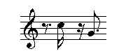
Dans cmn-ex.lisp et rests.lisp se trouvent des abréviations pour les silences les plus usuels et le code pour d'autres sortes de silences (p.ex. des formes inclinées). Si la mesure est plus grande qu'une ronde (p.ex. 3/2 comme dans joh.cmn), le whole-rest correspond à un silence de quatre noires ; pour indiquer une mesure de silence, il faut donc utiliser whole-measure-rest.
dynamics &rest objects ppp pianississimo pp pianissimo p piano mp mezzopiano pppp ffff fff fortississimo ff fortissimo f forte mf mezzoforte sff spp sf sforzato sforzando forzando fz fp rfz rinforzando sfp sfz niente
Si vous souhaitez quelque autre indication,
essayez dynamic n &optional spacing-data.
Pour placer les soufflets (crescendo, etc), voir
crescendo); pour les textes joints
tels que poco a poco
voir connected-text.
Un exemple de la fonction dynamic :
(cmn staff treble c4 q (dynamic "fffffff")).
Les spacing-data contrôlent l'espacement (interne ?) des
glyph -- (cmn treble c4 q (dynamic "fffspz" (list .2 0 .2 0 .15 0 .05 0 0 0 0 0))).
Pour une marque (vertical line?)
subito mettre ou "I" (un i majuscule) ou "subito" :
(cmn (free-expansion-factor 3.8)
(c4 h (begin-crescendo (begin-dynamic (dynamic "fIp")) (end-dynamic (dynamic "Ipp" ))))
(c5 h (stem-up) (end-crescendo))
(c4 h (begin-crescendo mf (dynamic "Ip")))
(c5 h (stem-up) (end-crescendo)))
Articulation staccato accent little-swell wedge tenuto marcato down-bow up-bow detache martele thumb natural-harmonic stopped-note open-note pedal pedal-off bartok-pizzicato snap-pizzicato left-hand-pizzicato swirl mouth-position
L'exemple dans l'introduction utilise la plupart de ces marques ; little-swell prend une marque dynamique optionnelle ; marcato et les pizzicato ont un marque optionnelle d'épaissseur. Dans pedal.lisp on voit comment noter les trois pédales du piano. Voir aussi accent.lisp et percussion.lisp pour certains symboles utilisés au 20e siècle tels que :

Ornements mordent inverted-mordent double-mordent turn short-trill trilled-turn trill tr
Chaque symbole comporte un signe optionnel (ornament-sign). Le trille peut prendre plusieurs messages additionnels - le but est de gérer les détails. Les options sont :
sign-position other-note wavy-line wavy-time
"sign-position" peut être ":right" (par défaut), ":up", ou ":in-parentheses". "wavy-line" crée une ligne ondulée à partir de la note. "wavy-time" indique où doit se terminer la ligne ondulée (en valeurs onset-style), la valeur par défaut est la fin de la note. Les arguments possibles pour "wavy-line" sont "t", "nil", ou une liste ; si c'est une liste, les arguments '(dx0 dy0 dx1 dy1) permettent de prolonger la ligne de différentes manières.
(cmn staff treble c5 q mordent c5 q turn c5 q short-trill c5 q trilled-turn c5 q trill c5 q (mordent (ornament-sign small-flat)) (c5 q (trill (sign-position :up) (ornament-sign small-natural))) (cs5 q (trill (ornament-sign small-sharp) (sign-position :in-parentheses))) (c5 q (trill (wavy-line t))) (c5 q (trill (ornament-sign flat))))

arpeggio arrow arrow-up arrow-down no-arpeggio
Ces articulations s'appliquent principalement aux accords. L'arpeggio peut avoir une flèche en haut ou en bas. Non-arpeggio est une braquette sur le côté gauche de l'accord.
(cmn staff treble
(chord (notes c4 e4 g4) h (arpeggio arrow-down))
(chord (notes c4 e4 g4) h arrow-up)
(chord (notes d4 g4 e5) h no-arpeggio))
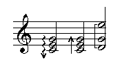arrowhead-up arrowhead-down
tracent les flèches.
fingering &rest objects
En plus des arguments habituels, les doigtés "fingering" acceptent des nombres qui sont alors affichés en une pile verticale au-dessous ou en-dessous de l'objet. "fingering-size" et "fingers" existent. Les arguments du doigté ("fingering") peuvent aussi être des chaînes de caractères ou des objets-textes.
(cmn staff treble (e4 q (fingering 3)) (chord (notes c5 g4) q (fingering 7 2)))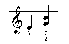
pause &rest objects breath-mark general-pause g.p. grand-pause fermata upside-down-fermata hold caesura pause (cmn staff treble (meter 2 4) (c4 q fermata) (quarter-rest g.p.) (c4 q breath-mark) (c4 q upside-down-fermata) double-bar)

text &rest objects
"text" est une sorte de marque tout comme "staccato". Le texte peut utiliser toutes les fontes disponibles. On peut changer l'échelle et faire des rotations. La fonte par défaut est celle donnée par le paramètre "text-font". Les messages concernant les fontes sont :
font-name font-size font-scaler ; par défaut "font-name"="Times-Roman"
(cmn staff treble
(c4 q (text "middle-c" (dx 1.0) (dy 2.0) (rotate 180)
(font-name "Times-Roman") (font-size 12))))
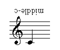La justification par défaut est (:none) ; en outre le texte peut être justifié à gauche : (:left), centré (:center) ou justifié à droite (:right) -- (text "hi" (justification :right)). (non justifié = (justification :none)). Du texte lié est mis en page par "text-" et ses copains ; voir ici. "font-size" donne la vraie dimensions (non scalarisé), tandis que "font-scaler" applique à "font-size" l'échelle de la partition. Le placement d'un texte est normalement attaché à l'objet (le c4 de notre précédent exemple), mais cela peut tourner au cauchemar pour les paroles de chants, etc. Pour les messages spéciaux, il vaut mieux utiliser les messages "x" et "y", qui sont ou bien "nil" (par défaut) ou une forme "lambda" qui remplace toutes les autres données. La forme est appliquée au texte, à l'objet, à la partition et à tous les autres arguments passés à la procédure de mise en page. Voir les exemples des fichiers ".cmn". et le prologue.
Pour les indications de tempo, le nom de l'auteur, etc., une solution pratique est d'attacher ces textes à la clé :
(clef treble ; la parenthèse reste ouverte (text "Pas trop vite" (font-name "Times-Roman")(font-size 12)(dx 1.)(dy 1.5)) (text "Johannes Goehl (1935 - 2002)" (font-name "Times-Roman")(font-size 12)(dx 22.)(dy 2.5))) ; la parenthèse se fermePour placer du texte : (cf. aussi lyrics.lisp ):
(defun lyrics (&rest args)
(apply #'text (font-name "Times-Roman") (font-scaler .5)
(y #'(lambda (mark note score &optional justifying) (- (staff-y0 note) .9)))
(x #'(lambda (mark note score &optional justifying)
(+ (x0 note) (if (sign note) .2 0))))
args))
Pour obtenir un glyphe spécial en pointant sur sa situation dans la fonte, utiliser la fonction glyph (voir exemple dans cmn-ex.lisp).
Le message underlined souligne le texte.
Accents, signes diacrituques, umlaute Voilà ce que Bill Schottstaedt a dit :
> Please, is there a way to get diacritics signs in a text with CMN ?
Si vous savez où ils se trouvent dans la fonte, vous pouvez indiquer
l'adresse dans le texte :
(cmn (prolog #'(lambda (score)
(make-ISO-encoded-version score
"Times-Roman" "ISO-Times-Roman")))
staff treble
(c4 q (text "s\\374\\337"
(dy 1.5) (dx -.25) (font-name "ISO-Times-Roman")
(font-scaler .5) (gray-scale .25))))
qui donne "s" "u-umlaut" "double-s". Mon grand-père a écrit son
nom avec a-umlaut.
Il y a quantité de marques qui s'appliquent à plus d'une note : ties, slurs, beams, etc. CMN les gère de deux manières. Chaque marque multi-note est doté d'une begin-<marque> et d'une end-<marque> ; formes qui sont à la fois des variables et des fonctions (comme tous les autres objets) qui sont gérés par des piles (dans le sens informatique ;-). Ce qui veut dire que la dernière à débuter est la première à finir - les marques sont enchâssées sans problèmes.
Si les marques doivent se croiser, il clarifier quelle begin-<marque> correspond à quelle end-<marque>. En CMN cela est fait par des identificateurs. Voici un exemple de la forme élémentaire :
(cmn staff treble (c4 q begin-slur) (d4 q) (e4 q end-slur))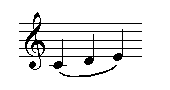
Et un exemple avec des identificateurs:
(cmn staff treble (c4 q (setf slur-tag (begin-slur))) (d4 q (end-slur slur-tag)))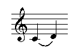
L'identificateur est simplement une variable (on peut lui donner n'importe quel nom). Dans l'exemple donné, l'identificateur n'était pas nécessaire, mais voyez cet exemple :
(cmn staff treble
(c4 h (setf lower-text (text- "hi"))
(setf upper-text (text- "sil" (y0 2.0))))
(d4 q (-text- "ver" upper-text (y0 2.0)))
(d4 q (-text- "ho" lower-text))
(e4 q (-text "!" upper-text (y0 2.0)))
(e4 h (-text "away!" lower-text)))
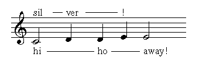Ici la ligne joignant les mots doit être informée où se trouve le mot suivant de la phrase. Sans les identificateurs (
upper-text, lower-text) c'est assez difficile.
Connected text
Pour lier un texte à des notes et des passages, on utilise les commandes
text- -text- -text text_ _text_ _text
Elles acceptent un nombre quelconque d'arguments, l'un d'entre eux
devant être une chaîne ou un objet texte.
text- démarre un texte et continue soit avec
-text- ou avec -text.
-text- est relié à la séquence courante ou à celle
indiquée par une étiquette et permet de la continuer.
-tex- est relié de même à une séquence (courante
ou étiquetée) et la termine.
Graphiquement, la jointure est faite par la liste
text-connecting-pattern qui par défaut est une simple ligne
entre les fragments de texte (soit '(10 0)). Pour obtenir une
ligne pointillée :
(cmn (text-connecting-pattern '(5 10)) staff treble (c4 h (text- "hi")) (d4 q) (d4 q (-text- "ho")) (e4 q) (e4 h (-text "away!")))

La position verticale du motif peut être commandée par
connecting-pattern-level.
D'autres motifs sont :
:dash (centré entre les mots)
et :arrow (un flèche à droite).
L'initialiseur connecting-pattern-thickness
ou le message thickness précise l'épaisseur
de la ligne de jonction.
text- retourne une étiquette qui peut être utilisée
pour distinguer des séquences de texte simulténées.
Si text- rencontre un message, la forme lambda
associée est appliquée à l'ensemble du texte (voir
joh.cmn). Pour changer localement un motif de connexion, il faut
appliquer le message connecting-pattern à text-
-text- ou -text.
text_ et ses collègues agissent comme
text-, mais placent le motif de connexion
à la ligne de base (au niveau du point) et non pas à mi-hauteur.
Voir les commentaires dans le fichier cmn3.lisp traitant de
plusieurs fonctions lyriques, qui augmentent les moyens de contrôler
le placement des textes et leur connexion.
glissando and portamento glissando-to &rest objects portamento-to &rest objects begin-glissando end-glissando begin-portamento end-portamento glissando- -glissando portamento- -portamento
Ceci trace la ligne reliant deux notes avec, le cas échéant, un texte sur la ligne inclinée. La ligne est normalement droite ; pour obtenir une ligne ondulée, utiliser le message wavy-line. Avec le message thickness ou avec le score slot : glissando-thickness on ajuste l'épaisseur de la ligne (droite).
(cmn staff treble (e4 h (glissando-to a3)) quarter-rest (c4 h begin-glissando) (g4 h end-glissando)) ;; set free-expansion-factor to 2 to get room for the word "gliss" ;; or use the message minimum-length: (minimum-length 2.0)

S'il y a de la place, cmn ajoute « gliss » ou « port » ou autre chose à la ligne.
(cmn staff treble
(c4 h (begin-glissando
(text "up up up" (font-name "Times-Roman") (font-scaler .6))))
(c5 h end-glissando))
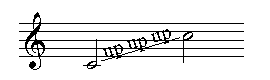crescendo and diminuendo begin-crescendo begin-diminuendo end-crescendo end-diminuendo crescendo- -crescendo diminuendo- -diminuendo
Ceci crée les soufflets utilisés pour noter les crescendos et
diminuendos. Un soufflet va de la note courante et va ou bien
jusqu'à la note à laquelle correspond le message end-crescendo
ou bien jusqu'à la fin de la durée. Le souffler peut démarrer n'importe
où : le début est différé par onset-offset.
Le message width détermine l'ouverture du soufflet.
On peut spécifier les valeurs dynamiques à placer au début et/ou à la fin
d'un soufflet, soit en passant la valeur à la fonction begin-crescendo
soit avec les messages begin-dynamic et end-dynamic.
La macro always-dyn-up place soufflets et valeurs
au-dessus de la portée.
Si on utilise la fonction begin-crescendo
(ou begin-diminuendo), end
it with the function end-crescendo (end-diminuendo), not the variable
form.
(cmn staff treble (c4 q (crescendo (duration 2.0))) (d4 q) (c4 q (begin-diminuendo (end-dynamic f) (width .75))) (d4 q) (e4 q (end-diminuendo)) (c4 q (begin-crescendo ppp f)) d4 q e4 q f4 q (g4 q (end-crescendo)))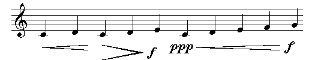
Si on souhaite mettre l'indication cresc., il faut utiliser la fonction text attachée à une note
(cmn staff treble
(c4 q (text "cresc." (dy -2.0)(font-name "Times-Italic")
(font-scaler 0.5)))
Ties begin-tie end-tie tie-direction tie-curvature dashed dx0 dy0 dx1 dy1 breathing-space
Les liaisons sont gérés comme les glissandos.
tie-direction indique le sens de la courbure
:up ou :down. tie-curvature
indique le degré de courbure ; la valeur par défaut
figure dans le "slot" initial. L'argument pour
dashed est une liste : longueur_du_trait
longueur_de_l'espace.
(cmn staff treble (c4 q begin-tie) (c4 q end-tie) (c4 q (begin-tie (tie-direction :up) (tie-curvature .5))) (c4 q end-tie))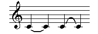
Si des accords sont liés, cela s'applique automatiquement à toutes les notes de l'accord.
(cmn staff treble (chord (notes c4 e4 g4 c5) q begin-tie) (chord (notes c4 e4 g4 c5) q end-tie))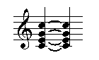
On peut aussi lier des notes une par une :
(cmn staff treble (chord (notes (c4 (setf tie-c4 (begin-tie))) e4 g4 c5) q) (chord (notes (c4 (end-tie tie-c4)) e4 g4 c5) q))

Sauf indication contraire ((automatic-ties nil)), CMN
trace les liaisons chaque où c'est nécessaire.
Voir
ring.lisp
pour l'usage de
ring- et consorts (ties off into space).
(cmn staff treble (meter 2 4) f4 e. f4 q. f4 h.)

(cmn staff treble (meter 2 4) (chord (notes f5 af4 df5) (rq 5/4)) (chord (notes f5 ef5 df5 a4) (rq 3/2)) (chord (notes f4 gf4 af4 d5) (rq 5/4) stem-down))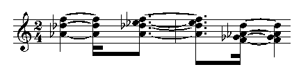
Liaisons (Slurs) begin-slur end-slur slur- -slur- -slur
Les liaisons sont comme les prolongations, mais ne sont pas limitées à deux notes. La cmn cherche à faire de jolies liaisons, mais souvent se trouve coincée. Dans ce cas, il faut intervenir et ce n'est pas facile. Il faut éditer une liste de deux listes, chacune comprenant 6 points. Ce sont les points de contrôle de deux courbes de Bézier qui tracent la liaison. '((x1 y1 x2 y2 x3 y3) (x2 y2 x1 y1 x0 y0)) donnent l'allure générale. $$$ with the slur thickness subtracted from y1 and y2 on the return run. $$$ Le begin-slur est doté de nombreux messages pour qu'on puisse décrire les liaisons :
dx dy dx0 dy0 dx1 dy1 dx2 dy2 dx3 dy3 slur-direction slur-thickness slur-curvature dashed
dx et dy sont appliqués à tous les points, les autres ne concernent que les points indiqués. (begin-slur (dy -.25)) descend la liaison entière de 0.25, mais (begin-slur (dy0 -.25)) ne descend que les 4 premiers points qui décrivent la liaison. "dashed" a le même sens que pour les prolongations.
(cmn staff treble
g4 q begin-slur ef4 q c4 q end-slur
g4 q begin-slur b4 q a4 q end-slur
b4 q begin-slur e5 q d5 q cs5 q end-slur
a4 q begin-slur e4 q f4 q g4 q a4 q end-slur
g4 q begin-slur ef5 q bf4 q ef4 q end-slur)
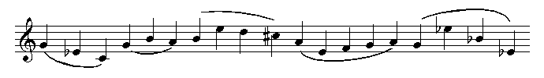tremolo &rest objects
Il y a deux sortes de tremolos : "unmeasured" (hors mesure) et "measured" (en mesure). En outre, il faut choisir le style impliquant poutres, barrés, liaisons et tête de notes sans que cela soit toujours cohérent. Par exemple, un manuel de notation prescrit que les trémolos de blanches doivent avoir une poutre et deux barrés, les trémolos de noire pas de poutre et trois barrés, les croches une poutre et deux barrés, mais les têtes pleines pour qu'on puisse les distinguer des blanches. Ce serait logique de ne pas mettre de poutres mais trois barrés aux trémolos de blanches ou de noires. Grumble! Essayons d'y voir clair. Il y a d'abord :
begin-tremolo end-tremolo begin-measured-tremolo end-measured-tremolo unmeasured-tremolo tremolo paranoid-tremolo measured-tremolo
"begin-tremolo" et "end-tremolo" sont des trémolos "unmeasured". Le début et la fin conviennent aux cas où il y a deux notes par trémolo. Les autres ("unmeasured-tremolo", etc) conviennent aux tremolos de notes seules. Aux trémolos paranos on ajoute le mot "trem.". Ces cas ont les messages supplémentaires :
tremolo-position :on-stem ou :between-stems measured t ou nil paranoid t ou nil tremolo-slashes nil (=3) ou un entier tremolo-beams nil ou le nombre de poutres slant .1 width .3 thickness .08 font-name "Times-Roman" font-scaler .4 maximum-length .85 (cmn staff treble (c4 q tremolo) (c4 w paranoid-tremolo) (c5 q (tremolo (tremolo-slashes 1))) (c4 h begin-measured-tremolo) (d4 h end-measured-tremolo) (c4 e begin-tremolo) (d4 e end-tremolo))

Poutres
Les poutres sont mises automatiquement ou à la main. Si l'option automatic-beams est t (par défaut), le poutrage automatique s'adapte à la métrique s'il peut. Un poutrage explicite prévaut à l'automatique. Les commandes pour un poutrage explicite sont :
begin-beam end-beam no-beam no-beam-break beam- -beam- -beam beam-direction explicit-beams dx dy dx0..dy1 ;voir exemples dans cmn-ex.lisp
Les deux premiers sont sont comme begin-slur et end-slur et s'appliquent à toutes les notes de la portée entre begin-beam et end-beam. Beam- et ses semblables sont comme text- et ses semblables. Voici un exemple des trois possibilités :
(cmn staff treble c4 e d4 e (c4 e begin-beam) (d4 s) (e4 s end-beam) (c4 e (setf beam (beam-))) (d4 e (-beam- beam)) (e4 e (-beam beam)))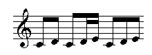
Les nombres complétant les division rythmiques dites "irrationnelles" sont aussi simples que possible -- cmn ajoute les braquettes aux groupement seulement s'il est indispensable. Pour en permettre l'usage explicite :
beat-subdivision- -beat-subdivision- -beat-subdivision no-beat-subdivision
Ils acceptent des messages supplémentaires (un nombre, une chaîne ou un objet texte) and braquetté (bracketted). Ce dernier peut être t (par défaut), nil, :up ou :down. Les détails peuvent être changés par dx, dy, dx0, dy0, dx1, dy1 et le "bracket-type" (voir cmn-ex.lisp).
(cmn staff treble c4 te c4 te c4 te
(d4 (rq 1/5)) (d4 (rq 1/5)) (d4 (rq 1/5)) (d4 (rq 1/5)) (d4 (rq 1/5))
(c5 (rq 2/3)) (c5 (rq 1/3))
(c4 te (setf hi (beat-subdivision- (subdivision 7) (dy0 -.5) (dy .5))))
(c4 te (-beat-subdivision- hi)) (c4 te (-beat-subdivision hi)))

Si les notes poutrées appartiennent à différentes portées, commencer la poutre sur la portée la plus élevée même si les notes de cette portée ne s'accrochent que plus loin :
(let ((tag nil)) (cmn (staff bass (c3 e (setf tag (beam-))) (quarter-rest invisible) ; not strictly necessary, but improves spacing (eighth-rest invisible)) (staff bass (eighth-rest invisible) (d3 e (-beam- tag)) (ef3 e (-beam- tag)) (g3 e (-beam tag)) bar)))
Si les "onsets" sont données explicitement, les notes à poutrer sont triées automatiquement. Des poutre en éventail (utilisées par Bartok et d'autres) sont implémentées dans le fichier "wedge.lisp" (voir aussi des exemples explicites dans cmn-ex.lisp). La fonction rqq dans rqq.lisp étend cette notion à des rythmes bien plus extravagants. Voir les commentaires et les exemples dans ce fichier. Voici un exemple de rqq:
(cmn treble (rqq '(2 ((1 (1 1 1 2)) (1 (1 2)) (1 (1 2 4))))
g4 fs4 sixteenth-rest en4 (chord c4 ef4) eighth-rest af4 bf4 gf4))
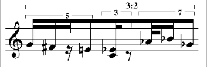(setf _identifiant_ (beam-))et au point d'arrivée, écrire
(-beam _identifiant_). Pour accrocher les notes entre ces deux points, écrire
( ... la note ...(-beam- _identifiant_))Pour les cas complexes, voir l'exemple franz.cmn et ccarh93.cmn (pages 13 - 19)
endings*****************************
Voilà les indicateurs de première et de seconde reprise.
begin-first-ending begin-second-ending end-first-ending end-second-ending
Begin-first-ending et begin-second-ending acceptent des messages additionnels :
max-line ;le numéro de la ligne avec la plus haute (plus basse) note sous le signe d'octave terminal ;t si la terminaison est aussi la fin de la pièces (cmn staff treble (meter 2 4) (c4 q) (c4 q) (bar begin-first-ending) (c4 q) (c4 q) (end-repeat-bar end-first-ending begin-second-ending) (c4 q) (c4 q) (bar end-second-ending) c4 q c4 q double-bar)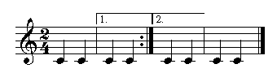
segno coda (cmn staff (bar (mm 96 e) treble c4 w (bar segno) (c4 w) (bar coda) (c4 w) (bar (change-beat q. e)) (c4 w))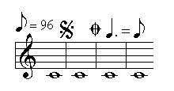
change-beat mm
On indique ainsi le tempo et (comme montré ci-dessus) le changement de tempo. Le changement de battue a deux arguments : l'ancienne et la nouvelle. mm prend deux arguments : la valeur métronomique et si nécessaire la valeur rythmique concernée (par défaut une noire). Normalement la valeur métronomique vient en plus de l'indication du tempo $$$???$$$[ is a parenthetical addition to the tempo indication]. mm also responds to in-parentheses and the various justification messages.
repeat-measure
Le symbole repeat-measure est centré entre deux barres de mesure et vaut une mesure. En tant que fonction, il accepte un nombre en option qui sera affiché au-dessus du symbole.
(cmn staff treble (meter 2 4) c4 q c4 q bar repeat-measure bar c4 q g4 q bar (repeat-measure 440) c4 q c4 q double-bar)

octave transposition
Les transpositions d'octaves sont mises automatiquement
pour les notes très hautes ou très basses, sauf si on
initialise (automatic-octave-signs nil).
(cmn staff bass c5 e d5 e f5 e g5 e c5 q g4 q c4 q)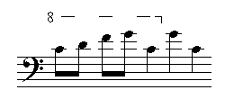
If you like the Italian persiflage of "va" and "ma" (or, God forbid, "bassa"), set the appropriate score structure slot (use-italian-octave-signs, add-bassa-to-octave-signs). Explicit octave signs are handled with:
begin-octave-up octave-up end-octave-up begin-octave-down octave-down end-octave-down begin-two-octaves-up two-octaves-up end-two-octaves-up begin-two-octaves-down two-octaves-down end-two-octaves-down begin-no-octave-sign no-octave-sign end-no-octave-sign
Ils agissent comme les ligatures et les liaisons. These act like the tie and slur messages. Octave-up and friends apply only to one note; no-octave-sign and friends turn off the automatic octave signs for short passages. The note pitch values within the octave signs are the displayed values, not the true values:
(cmn staff treble c4 q begin-two-octaves-up d4 q e4 q f4 q end-two-octaves-up)

These take the messages vertical-separation, font-name, font-scaler, and octave-sign-pattern.
Rehearsal marks and measure numbers
Rehearsal marks are either numbers or letters, optionally boxed or circled, and normally attached to a bar line. The cmn entities are:
rehearsal-number rehearsal-letter
each of which take the additional message frame to set the type of the surrounding frame. The frame can be nil (the default), :none, :box, or :circle. It need be set only on the first rehearsal mark. Each mark after the first normally increments the mark letter or number ("Z" goes to "AA", and "I" is skipped), but you can reset the mark to be anything by passing it as an argument to rehearsal-number or whatever. measure-number is similar -- it displays a number. Other messages are: rehearsal-frame-width and rehearsal-frame-white-space.
page-mark and line-mark
Page-mark is an explicit end-of-page mark. Line-mark is an explicit end-of-line mark. Line-mark takes the additional messages dx and dy. In this context, these refer to the positioning and justification of the upcoming line. Normally staff positioning within a line is set by the dy message to the staff, and the staff/system-separation variables. There are cases where one line, or a staff within a line needs to be moved vertically to avoid collisions. Similarly, the justification decisions within a line are sometimes suboptimal. In a sense, the dx and dy messages provide you with a horizontal and vertical ruler to guide the positioning process to whatever level of detail you like. The argument to dx (in this case) is a list of lists, each inner list a pair of numbers: '(beat dx-position) where the beats (actually quarter-notes, not beats) are numbered from 1, and the dx-position is in the normal staff-based units (use in-inches, if you like). If more than one line-mark applies to a given line (via multiple staves, all being explicit about line breaks), all the dx (and dy) messages are merged before being applied to the justification of that line. Vertical (staff) positioning is handled by dy. Its argument can be a number, or a list of lists. If a number, it is like a local dy message to the staff it occurs in. If a list of lists, each inner list is a pair of numbers '(staff-number dy) where the dy number is in the usual units, and the staves are numbered from 1 at the top of the line. To see the current rulers, set the show-rulers field of the score. In the glorious (but distant) future, we will figure out how to tie this into the window system and use a mouse to push tab stops around, as in WriteNow. Line-break and page-break are the same as line-mark and page-mark.
Note list display (add-note, display-notes) add-note score name begin-time duration frequency &rest rest
Add-note is the main interface between clm note lists and cmn. name is the instrument name, begin-time and duration are in seconds, frequency is in Hz. cmn assumes 12 tone equal tempered 5-line staff output, and uses the score slot metronome to choose the closest simple rhythmic values for begin-time and duration. To save the result as a call on cmn, use cmn-store. The easiest way to read in a note list is to wrap it up in a list and call display-notes:
display-notes score-attributes notes
(display-notes nil
'((vln 0 .5 440 .1) (vln 0 .5 660 .1) (vln .5 .5 880 .1)))

We can now write this out as a call on cmn with cmn-store. The latter's two optional arguments are the score structure to be stored (it defaults to the last score created -- *cmn-score*), and the output file name (it defaults to "hi.cmn").
If the score slot automatic-naturals is t, cmn adds natural signs wherever they seem to be needed. The two slots, implicit-accidental-style and implicit-accidental-duration, give you some control over how these decisions are made. The style can currently be :new-style, :old-style, :only-chords, or :paranoid. The duration (perhaps "persistence" is a better word) is the number of notes an accidental mark hangs over -- it only applies to :new-style (the default) where it defaults to 1. :old-style is the 19th century way -- an accidental is cancelled only by a bar line. :paranoid doesn't let anything cancel an accidental. cmn tries to be smart about key signatures as well, but there are some weird ambiguous cases here.
graphics &rest objects
Dans une partition cmn on peut insérer des fichiers .eps et avec changements d'échelle, rotations etc. La commande graphics a besoin d'un paramètre additionnel : file dont l'argument est le nom du fichier à insérer.
(cmn (output-file "2.eps") staff treble c5 s)
(cmn staff treble
(c4 q (graphics (file "2.eps") (scale .6 .6)
(dx 2.0) (dy 1.0) (rotate 90))))
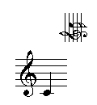The contents of the .eps file are copied into the output file of cmn.
La Bounding Box peut avoir un comportement capricieux : pour s'en rendre compte, regarder le résultat sur une feuille très grande (A3 ou plus) ; des fois ce qu'on a inséré se retrouve sur le bord.
Comment ménager de la place pour ce qu'on vient d'insérer ? Dans l'état actuel (de mes connaissances) on obtient des superpositions.
.with-cmn &rest objects
On peut transformer une partition en marque et l'appliquer par
with-cmn. with-cmn agit comme cmn
sauf qu'elle n'ouvre aucun fichier.
cmn is just a normal Lisp function of any number of arguments. If an
argument evaluates to nil, it is ignored (this is useful for functions
called only for their side effects); if an argument is a score-
object-list, the entire associated list is spliced into the argument
list as though it had occurred that way from the start. To take
advantage of this, use disgorge and engorge. Engorge returns a score-
object-list instance containing the objects passed as its arguments;
the various functions that take data lists (cmn, system, staff, etc)
notice these objects and "flatten" them, treating the list of objects
just as if they had come in the normal argument list. For example,
say we want a bunch of quarter notes all staccato, stem down, and we
are lazy typists:
(defun qsd (&rest notes)
(engorge
(loop for note-name in notes
collect (note note-name q staccato (stem-direction :down)))))
and now in cmn we can say: (cmn staff treble (qsd a4 c4 b4 g5 d5 d4))
This process can be carried as far as you like -- everything is
straight-forward lisp, and all of lisp is at your disposal. The
opposite of engorge (which wraps up the list of objects into a
score-object-list instance) is disgorge. When passed a
score-object-list instance, it returns the list you originally wrapped
up. A slightly more complicated example of engorge is the function:
cycle &rest objects
The objects passed to cycle are sequences of cmn objects. Each is treated as a circular list, and the result of cycle is a list whose length is the length of the longest sequence passed. Each object in the resultant list reflects the combination of the corresponding objects from the lists of sequences. That is,
(cmn staff treble (cycle (list c4 e4 g4 c4 e4 g4) (list e. s) staccato))
produces the same result as
(cmn staff treble (c4 e. staccato) (e4 s staccato) (g4 e. staccato)...)
De la même veine que engorge il y a staff-engorge,
system-engorge et score-engorge, cette dernière
fonction impliquant la fonction score.
Chacune de ces fonctions prend une liste de portées, systèmes ou partitions
et retourne le nouvel objet (portées, systèmes, etc) contenant toutes les
données. Par exemple,
(setf v1 (staff treble (meter 3 4) c4 q c4 h))
(setf v2 (staff treble (meter 3 4) d4 h d4 q))
(cmn (staff-engorge (list v1 v2)))
(setf s1 (system (staff treble (meter 3 4) c4 q c4 h)
(staff bass (meter 3 4) c3 h c3 q)))
(setf s2 (system (staff treble (meter 3 4) d4 q d4 h)
(staff bass (meter 3 4) d3 h d3 q)))
(cmn (system-engorge (list s1 s2)))
(setf sc1 (score staff treble c4 h c4 q))
(setf sc2 (score (initial-onset 3) staff treble
(d4 q (onset 3)) (d4 h (onset 4))))
(cmn (score-engorge (list sc1 sc2)))
Les arguments pour system-engorge et score-engorge
doivent être compatibles, ce qui veut dire que les listes des systèmes et des
portées doivent se correspondre. Score
looks like the overall cmn call, but it only packages up the score
data ready for a "real" cmn call.
These functions provide the underlying support for sections. In the cmn function call described earlier, there is actually yet another outer layer above systems, called sections. These provide a way to package up portions of a piece, apply local score decisions to those portions, and then glue them all together at the end. Each section looks like a cmn or score call:
(cmn (section (redundant-accidentals nil)
(staff treble (meter 4 4) cs4 q cs4 q cs4 q cs4 q))
(section (staff treble cs4 q cs4 q cs4 q cs4 q)))
The successive sections either are abutted (as in the example above), or use the score slot section-onset to specify the starting time, or use the score-slot initial-onset with correct onsets within the section data.
The easiest way to add your own graphics code is to package it up in a sundry instance and pass that to the object you want to own the code. The sundry class has two slots, sundry-name (a debugging convenience) and sundry-mark. Sundry-mark is a function that is called as follows:
(funall (sundry-mark sundry) sundry object score justifying).
The staccato function, for example, is essentially:
(defun staccato (&rest objects)
(make-instance 'sundry :name :staccato
:mark #'(lambda (mark note score &optional justifying)
(circle score
(+ (x0 note) (center note))
(+ (y0 note) .25)
.05 0 360))))
It finds the center of the note it belongs to, then tries to put a dot over it. Of course, the actual code is a bit more complicated because sometimes the dot goes under the note, we have to try to avoid colliding with staff lines, and we have to do something reasonable with the objects that might be passed as arguments to staccato. The basic graphics operations are:
lineto score x y ;add a line to (x,y) rlineto score dx dy ;add a line from the current point to (current-point+dx,current-point+dy) moveto score x y ;add a jump to (x,y) rmoveto score dx dy ;add a jump from the current-point to (current-point+dx,current-point+dy) curveto score x0 y0 x1 y1 x2 y2 ;add a Bezier curve from the current-point using these three points as guides show score mark ;display a mark of some sort draw score ;cause the current lines to be drawn fill-in score ;cause the current lines to be filled in circle score x y r &optional (ang1 0) (ang2 360) filled ;draw a circle, center (x,y), radius r starting at ang1 and going to ang2 line-width score ;the thickness of the line drawn by draw (a slot that can be setf'd)
The easiest way to mix text and music is to position the music using the margin slots, then attach the text as a series of marks on a staff. See cmnt.lisp for several examples used in this manual, cmn-glyphs.lisp for the standard music symbols, and percussion.lisp for a variety of simple examples. The field staff-y0 gives the bottom of the staff containing the current object.
Say we want to add a mark called smiley-face that will always appear above the staff centered over whatever object it is attached to. We want smiley-face to take all the usual messages. First, we write the display function that positions the face and draws it:
(defun display-smiley-face (mark note score &optional size)
(let* ((y-off (+ (y0 mark) (dy mark) (staff-y0 note)
(* (max 11 (+ 4 (head-line note))) *staff-line-separation*)))
(r (/ 10 40))
(x-off (+ (x0 note) -.05 (dx mark) (center note) (x0 mark))))
(with-thickness score mark .025
(circle score x-off y-off r)
(circle score x-off y-off (* r .6) 190 350)
(circle score (- x-off (* .33 r)) (+ y-off (* .25 r)) (* r .1))
(circle score (+ x-off (* .33 r)) (+ y-off (* .25 r)) (* r .1)))))
Using head-line, we either display the face above the staff (line 11) or above the note if it is above the staff. We center it over the note taking dx messages into account. Next we set the line width to be a little thicker than the minimum (.025), draw the outer circle, the mouth circle, and the two eyes. Now, to make this a normal CMN mark, we need to define the variable and function smiley-face.
(defvar smiley-face
(make-instance 'write-protected-sundry
:name :smiley-face :mark #'display-smiley-face))
(defun smiley-face (&rest objects)
(apply #'mark #'display-smiley-face :smiley-face objects))
et maintenant nous pouvons utiliser notre nouvelle marque :
(cmn staff treble c4 q smiley-face)

Voici un exemple traçant un ensemble arbitraire de lignes connectées :
(defun a-line (line-data &rest objects) ;; line-data is assumed to be a list of x y breakpoints (apply #'mark (lambda (mark note score &optional size) (let* ((y-off (+ (y0 mark) (dy mark) (staff-y0 note))) (x-off (+ (x0 note) (dx mark) (x0 mark)))) (with-thickness score mark 0 (moveto score (+ x-off (first line-data)) (+ y-off (second line-data))) (loop for x in (cddr line-data) by #'cddr and y in (cdddr line-data) by #'cddr do (lineto score (+ x-off x) (+ y-off y))) (draw score)))) :a-line objects)) (cmn staff treble c4 q (a-line '(0 0 1.0 .5 2.0 0)))
with-scaling score size x0 y0 &body body with-transformation score matrix x0 y0 &body body with-pattern score pattern &body body
These macros take some arbitrary graphics code and then apply some transformation to the result. With-scaling evaluates body, scales the result by size in both the x and y directions and puts the result at the location (x0, y0) in the outer score. With-transformation is similar but lets you apply an arbitrary transformation to the result of evaluating body. Matrix is used to transform the result of body, and the result is placed at (x0, y0). In both cases, the (x0, y0) coordinates should be scaled by the overall score size. With-pattern evaluates body using the pattern pattern.
More complex graphics additions can follow the example of trill (for simple one-note marks), or ties (for multi-note marks). Each new class should include methods for descry (to produce a printed representation of the instance), copy (to copy an instance), and display (the graphics code associated with the object). For multi-note marks that need to know the position of the later marks, specialize backpatch to the new class. If your new class is a sub-class of the sundry class, there should be no special cases to worry about. If your object has metrical significance that the justification routines need to handle, add a house method (see any example in the source). If you want to add your own graphics procedures to the header or "prolog" portion of the graphics output, use the message prolog (passed to the score in the overall-score-attributes section). Prolog's argument is a function of one argument, the overall score. It should send whatever graphics code it wants to (output score). For example, say we want to use the "ISO encoding" for the Times-Roman font (to get at umlauts and so on). In this case, we can use the built-in function make-ISO-encoded-version (which can also serve as an example of a Prolog function):
(cmn (prolog #'(lambda (score)
(make-ISO-encoded-version score
"Times-Roman" "ISO-Times-Roman")))
staff treble
(c4 q (text "s\\374\\337"
(dy 1.5) (dx -.25) (font-name "ISO-Times-Roman")
(font-scaler .5) (gray-scale .25))))
There can be any number of prolog calls -- the associated procedures are called in the order given in the argument list. Similarly, the code executed by the sundry object can send graphics commands directly to the output graphics file -- (output score) is the output stream.
Unless told otherwise, cmn includes every staff on every line, even if the staff has nothing but rests for line after line. There are a number of layout options to affect this decision. The layout message can be passed to the score (as one of the "attributes"), any system, or any staff, affecting everything "beneath" it that doesn't have some explicit layout directive. The default layout is nil; the other options are t, :old-style, :new-style, :locked, and a list of lists. :old-style layout includes a staff on a given line only if it has notes on that line. The layout t is the same as :old-style except that the first line of the score includes every staff (this is the norm for orchestra scores). :locked is used to explicitly override a higher-level layout setting, equivalent to an explicit (layout nil). :new-style layout omits the staff lines where the staff has no notes. Here's an example of :new-style

Il faut indiquer aux procédures de justification quels objets ne doivent pas être écrasées et quel est l'espacement dont ils ont besoin autour d'eux. Les quatre boîtes entourant un tel objet sont la bounding box (x0 y0 to x1 y1 -- c'est là que l'objet sera tracé), ses "murs" ou "walls" (le minimum d'espace blanc que l'objet $$$can get by with$$$), "fences" (the amount of white space that makes the object look uncrowded), et des expandeurs ou "expanders" (how to expand white space around the object when there's more space than we'd like). The walls, fences, and expanders are kept in variables with names such as:
bar-walls bar-fences bar-expanders
Each is a list of two numbers: left side, right side. Walls and fences are in the staff relative coordinates. Expanders are usually just integers -- the bigger the integer the more white space will be placed on that side of the object if needed to fill out the line. The bar data, for example, is:
(defparameter bar-walls '(.1 .1)) (defparameter bar-fences '(.1 .05)) (defparameter bar-expanders '(0 1))
These cause there to be .1 space on each side of the bar, no matter what. If bar-walls were '(.1 0) an object could stick right to it on the right side. You can uses the messages fences, walls, and expanders to make local changes to the spacing decisions. For example, in an extract from the Mozart Clarinet Quintet, the repeat bar was not giving itself enough white space, so I used:
(begin-and-end-repeat-bar (fences '(.2 .3)))
When a line is being justified and the line does not fill the page width, the score slot free-expansion-factor determines how much expansion takes place over the absolute minimum needed to display the objects. It defaults to 1.25, which may be a little stuffy, but 1.5 often looks spaced out. A free-expansion-factor less than 1.0 will force the objects to smash into each other. The score slot regularize (normally nil) can be used to instruct cmn to make a greater effort to attain a regular spacing.
On peut localement changer l'emplacement des "walls" (murs) en passant un autre x et y en paramètre à la fonction walls :
(c4 q
(graphics (file "xx.eps") (dx 0.0) (dy -2.20))
(walls '(0 2.0)))
Autre exemple pour mettre un peu d'espace entre l'armature et une altération en début de ligne:
bar line-mark (fs5 te (walls '(0.5 0.)) )(f5 te)(f5 te)
editor-hook filter-hook page-hook line-hook spacing-hook
Ces astuces indiquent comment éditer les listes de données en cmn avant que la traduction se fasse. Line-hook, page-hook et spacing-hook sont aussi des score slots. Voir les exemples dans cmn-ex.lisp. editor-hook est appliqué au flux brut des données et peut servir à extraire ou transposer des parties, par exemple. filter-hook est appliqué au résultat final du processus de justification et peut être utilisé pour extraire une page d'une partition ou pour appliquer une fonction d'édition de finition. La fonction extract-part effectue l'extraction de parties en utilisant editor-hook. Elle prend le nom de la partie à extraire ou une fonction qui prend en compte le nom de la portée et retourne t si c'est la partie souhaitée :
(cmn (extract-part "hi")
(staff (staff-name "hi") treble c4 q)
(staff (staff-name "ho") bass c4 q))
Pour transposer une partition, en tout ou en partie, voir /home/rbastian/CMN/cmn/transpose.lisp.
Il y a quelques exemples inclus dans le répertoire cmn : fux.cmn, moz.cmn, gus.cmn, carl.cmn, etc. cmn-ex.lisp contient quelques exemples. Les exemples de ce manuel sont dans cmnt.lisp. La variable *cmn-version* contient le numéro de version actuel (une date). Il y a un visualiseur pour le Mac : mettre "output-type" à :quickdraw comme cela
(cmn (output-type :quickdraw) staff treble c4 q)
Sur SGI ou Linux, il y a un visualiseur nommé xcmnw -- il faut utiliser Motif pour le compiler et le charger; quand ceci est fait, la sortie à utiliser est :x.
Les sujets suivants sont sur ma liste de ceux qu'il faut traiter : cadences, aides de lecture, améliorer l'extraction des paties instrumentales, glyphes pour la musique ancienne, glyphes remplissables pour X et Quickdraw, une interface graphique complète.
NDT : pouvoir ménager de l'espace vide, petites notes sans appuis tie sur la dernière tête de note et non pas sur la première en cas de subdivision.
Bill Schottstaedt bil@ccrma.stanford.edu